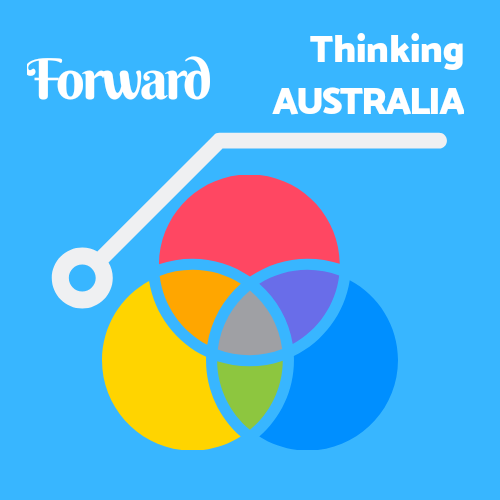

Forward Thinking Australia
A division of Freedom Publishers Union.
About progress, for the Australian Federation and Queensland State.
ABOUT
Forward Thinking Australia was established late November 2018 as a division of Freedom Publishers
Union.
We lobby for policies through operations supporting political parties which we believe have the potential
to deliver the best policy outcomes for the Australian Federation and Queensland State.
We are party-neutral and are proud of our political independence and free-thought philosophy.
We believe in the strength and robust structures of Australia's democratic processes, and trust they will
deliver fair policies to benefit all citizens.
Support we offer political parties comes only after we have assessed the policies of the party and are
satisfied they are aligned with the values of Forward Thinking Australia.
The evolving operations model we have adopted is constantly assessed and enhanced, allowing us to adapt to
the unique shifting dynamics of the Australian political environment.
These dynamics may sometimes shift the scope and focus of our operations, however such shifts are entirely
organic.
Support we offer political parties must not be considered a permanent endorsement.
Activity status: Not currently lobbying.
ASSESSMENT SUMMARY
We consider the mainstream parties to be (Category 1-in no specific order):
Federal
- Liberal Party of Australia (r)
- National Party of Australia (r)
- Australian Labor Party (l)
- Australian Greens (gl)
Queensland State
- Liberal National Party of Queensland (r)
- Australian Labor Party (Queensland branch) (l)
- Queensland Greens (gl)
We consider the controversial, yet credible, parties to be (Category 2-in no specific order):
- Liberal Democrats (libertarian)
We consider the controversial, non-credible, parties to be (Category 3-in no specific order):
- Teal 'cult'
- Pauline Hanson's One Nation
- Jacqui Lambie Network
DISCLAIMER
Forward Thinking Australia does not discriminate against any political party, individual politician or other
official political representative, with the exception being specific cases where we have concluded expressions of political values of a party or an individual are unfair,
offensive, contrary to the general principles of stable democracy, or outright extreme and dangerous - Category 3.
We will not support the policies from any political party or individual in Category 3, as we have concluded
expressions of political values of a party or an individual are unfair, offensive, contrary to the general principles of stable democracy, or outright extreme and
dangerous.
We reserve the right to express opposition to the policies, views and/or opinions of any political party,
individual politician or other official political representative.
We will always endeavor to engage, debate and compromise when necessary, to encourage improvement of
alternate policies which we believe have the potential to be adapted to become more appropriately aligned with the values of Forward Thinking Australia.
POLICIES OF INFLUENCE
First Nations Voice
Establishment of a First Nations Voice to the Australian Parliament, to be enshrined into the Australian
Constitution.
Sub-determination: Affirmative
Constitutional Recognition
Constitutional recognition of Aboriginal and Torres Straight Islander peoples.
Sub-determination: Affirmative
Treaty
Initiation of the process(es) to establish a Treaty.
Sub-determination: Affirmative
DECLARATION OF SUPPORT
Support in the Affirmative - First Nations Voice
Forward Thinking Australia supports the establishment of a First Nations Voice - 'The Voice' - to the
Australian Parliament.
We believe 'The Voice' must be enshrined into the Australian Constitution to protect it from being
abolished by future governments.
We believe 'The Voice' must be established as a non-binding advisory body only, which is to advise the
Australian Parliament on policies and other related matters that directly affect Indigenous communities.
We believe the design and function for and of the 'The Voice' must be controlled by the Australian
Parliament to ensure the advisory body continues to function within the scope of its designed purpose.
Support in the Affirmative - Constitutional Recognition
Forward Thinking Australia supports Constitutional Recognition of Aboriginal and Torres Straight Islander
peoples.
We believe Constitutional Recognition is the first of two important steps to providing an effective path
to healing for Indigenous cultures.
We believe Constitutional Recognition is of equal, if not greater, importance to 'The Voice' and believe
its place in the Australian Constitution is overdue.
Support in the Affirmative - Treaty
Forward Thinking Australia supports initiation of the process(es) to establish a Treaty.
We believe the establishment of a Treaty is the second of two important steps to providing an effective
path to healing for Indigenous cultures.
We believe establishing a Treaty is important, however the initiation of the process(es) is reliant on a
successful pathway of enshrining both 'The Voice' and 'Constitutional Recognition' into the Australian Constitution, therefore any Treaty process(es) must not proceed
at any time before.
Concluding determination for the Australian Indigenous Voice referendum: Affirmative
Authorized by Chris McGimpsey-Jones, President - July 15, 2023
Adopted by Forward Thinking Australia - July 15, 2023
Endorsed by Freedom Publishers Union - July 15, 2023
Opening Letter from the President
Concluding Letter from the President
HISTORY
2023 - Australian Indigenous Voice referendum, lobbied for "YES" campaign. Result, ❌
2022 - Federal Election, lobbied for Liberal Democrats. Result, Labor Party. ❌
2020 - Queensland State Election, lobbied for Queensland Labor. Result, Queensland Labor. ✅
2019 - Federal Election, lobbied for Australian Greens. Result, Coalition. ❌
© Copyright 2018-2023
GC Media Publishing Management
ABN: 98 317 740 240